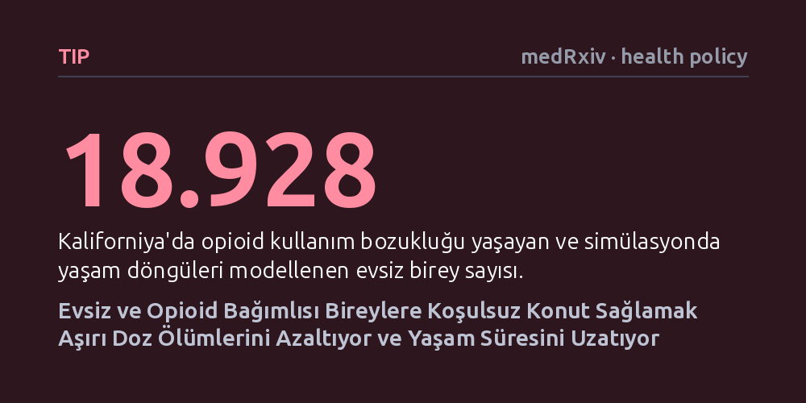

TIP · medRxiv · health policy · 2026-10-20
Araştırmacılar, Kaliforniya'da opioid bağımlısı evsiz bireylere tedavi şartı aramadan konut sağlamanın sağlık ve maliyet etkilerini bilgisayar simülasyonuyla inceledi. Koşulsuz barınma desteğinin aşırı doz ölümlerini azalttığı, yaşam süresini uzattığı ve harcanan paraya kıyasla yüksek sağlık kazanımı sağladığı belirlendi.
Evsizlikle mücadelede barınmayı bir tedavi şartına bağlamak yerine doğrudan temel bir hak olarak sunmanın, toplum sağlığı ve bütçe açısından daha verimli olduğunu gösteriyor.

Evsizlik yaşayan bireyler, düzenli bir konutu olan insanlara kıyasla hem çok daha düşük bir yaşam kalitesi ve süresine sahip hem de acil servisler başta olmak üzere kamu sağlık sistemine ciddi bir harcama yükü getiriyor. Amerika Birleşik Devletleri genelinde evsiz nüfusunun en yoğun olduğu eyalet olan Kaliforniya'da bu tablo daha da ağırlaşıyor; zira sokakta yaşayan her on kişiden birinin aynı zamanda opioid kullanım bozukluğuyla mücadele ettiği tahmin ediliyor.
Geleneksel kamu politikalarında barınma desteği çoğunlukla bireyin önce bağımlılık tedavisini kabul etmesi veya madde kullanımını tamamen bırakması şartına bağlanır. Ancak sokak koşullarında bağımlılıkla baş etmek son derece güç olduğundan, bu yaklaşım çoğu zaman bireylerin hem tedavisiz hem de sokakta kalmasıyla sonuçlanıyor. Bu durum, barınmanın bir ödül mü yoksa iyileşme için temel bir zemin mi olması gerektiği tartışmasını doğuruyor.
Araştırmacılar, bu kördüğümü çözmek amacıyla 'Önce Konut' (Housing First) yaklaşımının uzun vadeli sonuçlarını test etti. Bu modelde kişiye bağımlılık tedavisi görme ya da maddeyi bırakma zorunluluğu getirilmeden doğrudan kalıcı konut veya barınak imkânı sunuluyor. Çalışma, Los Angeles Bölgesi'nin 'Measure A' isimli yerel düzenlemesinde belirlenen barınma hedeflerini temel aldı.
Araştırma ekibi, Kaliforniya genelinde opioid bağımlılığı olan 18.928 evsiz bireyin tüm yaşam döngüsünü takip eden birey düzeyinde bir mikrosimülasyon kurguladı. Simülasyon modeli; bireylerin sağlık durumlarını, aşırı doz risklerini, hem barınma hem de sağlık hizmeti maliyetlerini dikkate alarak genişletilmiş konut erişiminin getireceği sonuçları ayrıntılı biçimde hesapladı.
Simülasyon sonuçları, barınma erişiminin genişletilmesinin gruptaki ortalama yaşam süresini 0,34 yıl (yaklaşık 4 ay) uzattığını ortaya koydu. Daha da somut bir gösterge olarak, bu grupta öngörülen ölümcül aşırı doz vakalarında 39 kişilik bir azalma sağlandı.
Ekonomik açıdan bakıldığında ise müdahale, kazanılan her kaliteli yaşam yılı (QALY) başına 31.083 dolarlık ek bir maliyet oluşturdu. Sağlık ekonomisinde kabul gören standart ödeme eşikleriyle kıyaslandığında bu tutar oldukça makul bir seviyede kalıyor ve harcanan kaynağın karşılığında çok yüksek bir sağlık değeri üretildiğini gösteriyor.
Elde edilen veriler, konut sağlamanın yalnızca sosyal bir yardım değil, doğrudan doğruya yüksek değerli bir sağlık müdahalesi olduğunu ortaya koyuyor. Bireye başını sokacak güvenli bir yer temin etmek, aşırı doz riskini ve sağlık sistemi üzerindeki plansız acil servis yüklerini belirgin biçimde hafifletiyor.
Araştırmacılar, kamu karar vericilerinin evsizlik ve opioid krizine karşı geliştireceği politikalarda 'Önce Konut' modelini merkezi bir konuma yerleştirmesi gerektiğini savunuyor. Bağımlılıkla mücadelenin, bireyin sokakta değil ancak güvenli bir çatı altında olduğu zaman başarılı bir zemine oturabileceği vurgulanıyor.